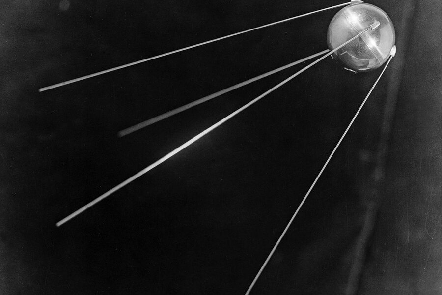
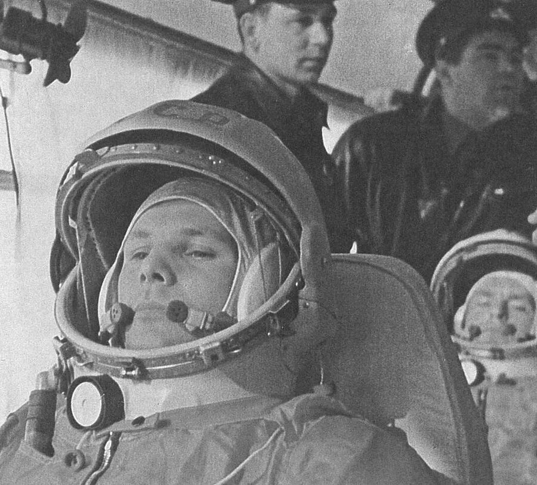
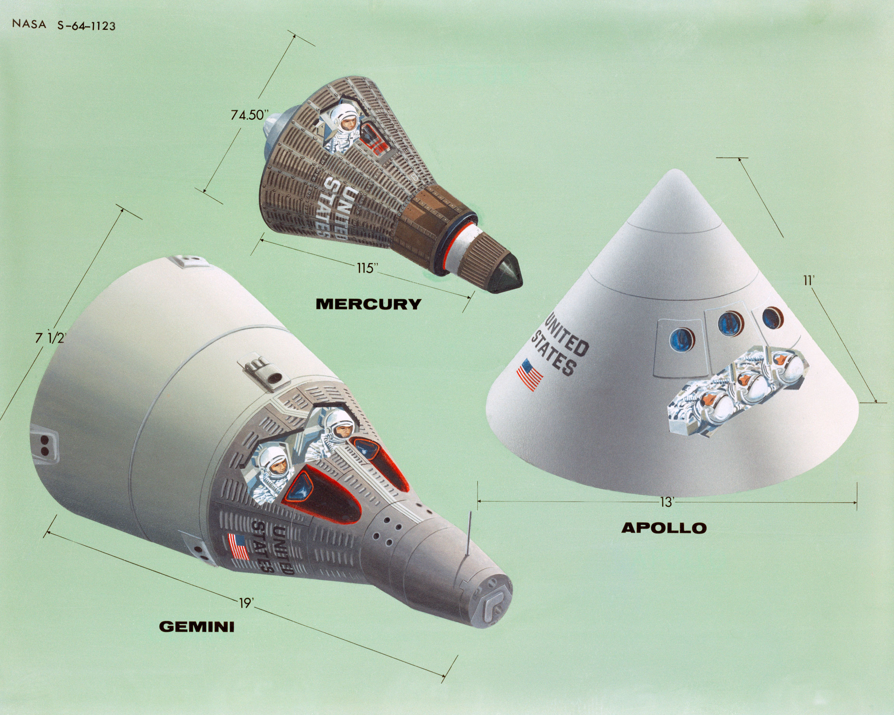
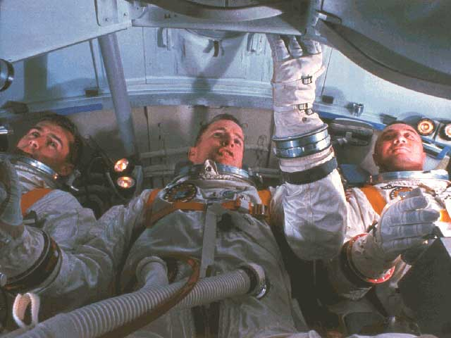
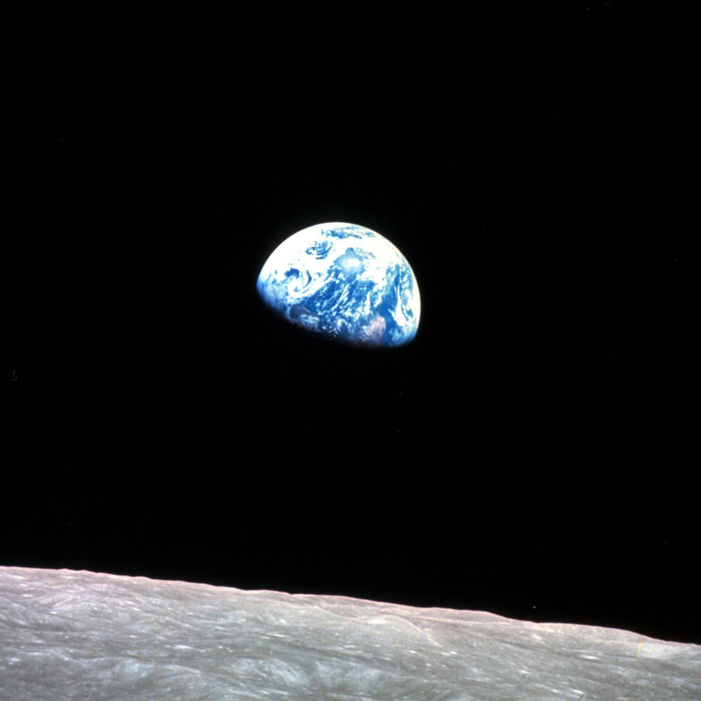
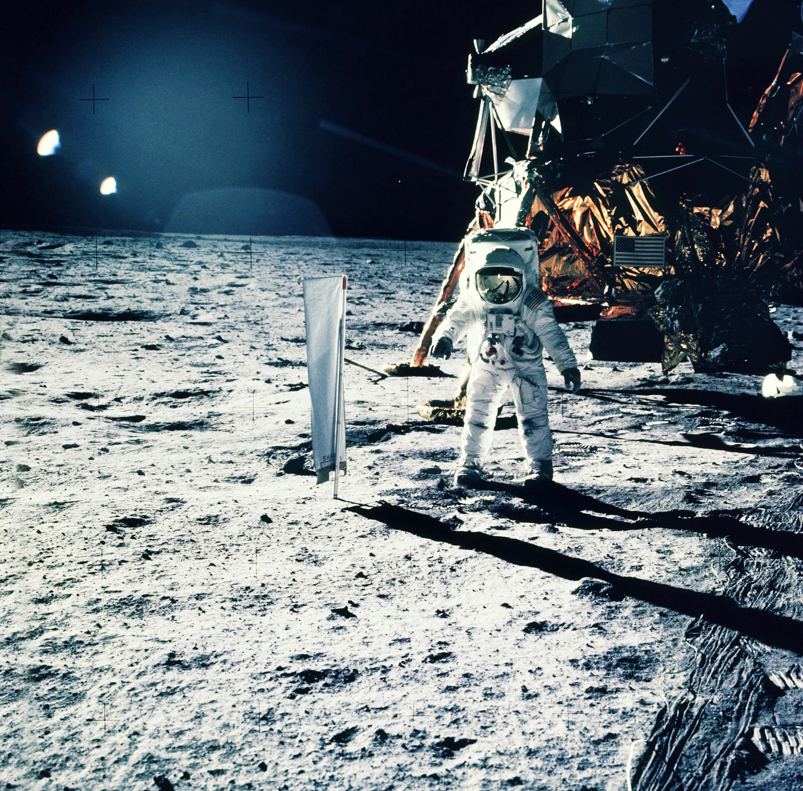
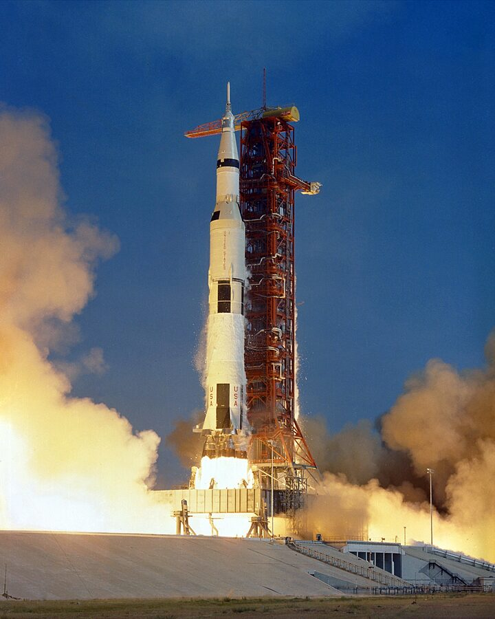
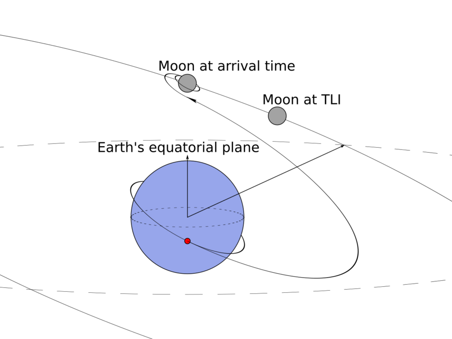

Apollo 11Orbital MechanicsComputingHuman Computers
In July 1969, humans walked on the Moon for the first time — the result of nearly a decade of engineering, physics, mathematics, and the work of hundreds of thousands of people. This lesson covers the mission, the science, the people who did the math by hand, and why the computer on board had less memory than the cheapest toy you own today.
The Apollo program did not begin in a vacuum. It was born out of Cold War competition, national pride, and a direct challenge from President Kennedy. Here is how a decade of work made July 20, 1969 possible.
Oct 1957
Sputnik shocks the world

The Soviet Union launches the first artificial satellite. The United States realizes it is behind in the space race and immediately accelerates its own program.
Apr 1961
Yuri Gagarin orbits Earth

Soviet cosmonaut Yuri Gagarin becomes the first human in space, orbiting Earth once in 108 minutes. The pressure on NASA intensifies.
May 1961
Kennedy's challenge
President Kennedy addresses Congress: "I believe that this nation should commit itself to achieving the goal, before this decade is out, of landing a man on the Moon and returning him safely to the Earth." NASA now has a deadline.
1961–1966
Mercury & Gemini programs

Mercury puts Americans in orbit. Gemini proves the skills needed for the Moon: spacewalking, orbital rendezvous, and long-duration flight. Each mission is a stepping stone.
Jan 1967
Apollo 1 tragedy

A cabin fire during a launch rehearsal kills astronauts Gus Grissom, Ed White, and Roger Chaffee. NASA spends 18 months redesigning the spacecraft. The loss makes every subsequent mission possible — the program learns from catastrophe.
Dec 1968
Apollo 8: humans reach the Moon

Frank Borman, Jim Lovell, and Bill Anders become the first humans to orbit the Moon and photograph Earth rising over the lunar horizon. The photo, "Earthrise," becomes one of the most influential images ever taken.
Jul 1969
Apollo 11: humans land on the Moon

Neil Armstrong and Buzz Aldrin land on the Sea of Tranquility. Armstrong steps onto the surface at 10:56 PM EDT on July 20. Michael Collins orbits overhead in the Command Module. They collect 47.5 pounds of lunar rock and return safely on July 24.
The Mission: How Apollo 11 Actually Worked
Going to the Moon was not a single flight — it was a carefully choreographed sequence of burns, separations, and rendezvous maneuvers, each one needing to work perfectly or the crew would not come home.

Saturn V was the launch vehicle that lifted Apollo 11 from Earth before the spacecraft separated and continued toward the Moon.
Saturn V rocket
The most powerful rocket ever flown. 363 feet tall, 6.2 million pounds of thrust at liftoff — enough to push 310,000 lb of spacecraft off the ground and out of the atmosphere in about 12 minutes. It burned through 20 tons of fuel per second.
Trans-Lunar Injection (TLI)

Once in Earth orbit, the third stage engine fired again for about 6 minutes, accelerating the spacecraft to 24,500 mph — enough to escape Earth's gravity well and coast most of the way to the Moon.
Lunar Orbit Insertion (LOI)
After a 3-day coast, the Service Module engine fired in the opposite direction, slowing the spacecraft enough for lunar gravity to capture it into orbit around the Moon.
Powered Descent
The Lunar Module separated and fired its descent engine, slowing from 3,700 mph orbital speed to zero over 12 minutes — threading a narrow corridor that if missed by too little meant crashing, and by too much meant skipping back to space.
Ascent and rendezvous
After 21 hours on the surface, the ascent stage engine fired and had to reach exactly the right orbit to dock with Collins in the Command Module. There was no rescue mission — this had to work.
Reentry
The Command Module hit Earth's atmosphere at 25,000 mph. The heat shield absorbed temperatures of 5,000 °F — hotter than the surface of the Sun. Parachutes slowed the capsule to 20 mph before splashdown in the Pacific Ocean.
How Far Is the Moon?
The Moon is an average of 238,855 miles (384,400 km) from Earth. Light takes 1.3 seconds to travel that distance. Apollo 11 took about 76 hours to make the trip — roughly 3 days of coasting through empty space before entering lunar orbit.
The Physics That Made It Possible
Apollo relied on physics that Isaac Newton worked out in 1687. Every maneuver — from launch to splashdown — was governed by just a few fundamental laws applied to an extraordinary situation.
Newton's Laws of Motion
First Law — InertiaAn object in motion stays in motion unless acted on by a force.In space there is no air resistance. Once the spacecraft coasted to the Moon, it kept moving without any engine. The engines only fired to change direction or speed.
Second Law — F = maForce = Mass × AccelerationEvery engine burn had a precise duration calculated from this equation. Engineers knew the engine's thrust (Force) and the spacecraft's mass, so they could calculate exactly how much velocity the burn would add.
Third Law — Action & ReactionFor every action there is an equal and opposite reaction.Rocket engines work entirely on this principle — burning exhaust gases push backward, so the rocket accelerates forward. No air is needed. This is why rockets work in the vacuum of space.
The Rocket Equation (Tsiolkovsky)
Tsiolkovsky Rocket EquationΔv = ve × ln(m0 / mf)This tells engineers how much velocity change (Δv) a rocket can achieve given its exhaust speed and how much propellant it burns. The brutal truth: most of a rocket's mass is fuel. Saturn V at launch was 85% propellant by weight. The payload that reached the Moon was less than 4% of the original liftoff mass.
Orbital Mechanics
Circular Orbit Speedv = √(GM / r)The speed needed to maintain a circular orbit depends on the planet's mass (M) and the orbit's radius (r). Lower orbits are faster; higher orbits are slower. The Moon orbits Earth at about 2,288 mph — the Lunar Module had to match that speed exactly to dock.
Why You Aim Ahead of the Moon
The Moon moves about 2,288 mph in its orbit. A direct shot at where the Moon is now would miss — by the time the spacecraft arrived 3 days later, the Moon would be somewhere else entirely. Trajectory planners aimed at where the Moon would be 76 hours in the future. Getting this calculation wrong by a fraction of a degree could miss the Moon by thousands of miles.
Key Numbers from Apollo 11
Launch Speed24,500mph to escape Earth's gravity
Reentry Speed25,000mph hitting Earth's atmosphere
Reentry Heat5,000 °Fhotter than the Sun's surface
Distance238,855miles to the Moon (average)
Transit Time76 hrsEarth to lunar orbit
Rocket Height363 fttaller than the Statue of Liberty
The People Who Did the Math
Behind every mission was an enormous team. Before digital computers could be fully trusted, a group of mathematicians — mostly women, many of them Black women — calculated trajectories, orbital paths, and abort scenarios by hand. They were called human computers.
Human Computer · MathematicianKatherine Johnson
Calculated the trajectory for Alan Shepard's first American spaceflight, and then for Apollo 11. When NASA switched to electronic computers for John Glenn's orbital flight in 1962, Glenn refused to launch until Johnson personally re-verified the computer's numbers by hand. Her calculations were that trusted. She worked at NASA for 33 years and received the Presidential Medal of Freedom in 2015.
Human Computer · SupervisorDorothy Vaughan
Became NASA's first Black supervisor in 1949, leading the West Area Computing unit at Langley. When electronic computers arrived, she taught herself and her team FORTRAN programming before NASA management even realized the transition was coming — making her unit indispensable. She is a founder of American aerospace computing.
Human Computer · EngineerMary Jackson
NASA's first Black female engineer. She analyzed data from wind tunnel experiments and flight tests, and fought — literally petitioned a court — to be allowed to take advanced engineering courses at a segregated school. She later moved into management specifically to help other women and minorities advance at NASA.
Software EngineerMargaret Hamilton
Led the team that wrote the flight software for the Apollo Guidance Computer. She coined the term "software engineering" because she wanted the discipline to be taken as seriously as hardware engineering. During Apollo 11's final landing, her team's priority-scheduling code saved the mission by shedding lower-priority tasks when the computer overloaded — the famous "1202 alarm" — allowing the landing to continue.
Flight DirectorGene Kranz
NASA Flight Director for Apollo 11 and later Apollo 13. Made hundreds of real-time decisions during descent and landing. His rule for Mission Control — "Tough and competent" — was the standard for everyone in the room. He famously declared "Failure is not an option" when engineers worked to bring the Apollo 13 crew home alive.
Rocket EngineerWernher von Braun
Chief architect of the Saturn V rocket. Led the team at NASA's Marshall Space Flight Center that designed, tested, and refined the rocket that made the Moon landing possible. The Saturn V flew 13 times and never lost a crew — an extraordinary record for the most powerful rocket ever built.
Scale of the Apollo Program
At its peak, the Apollo program employed more than 400,000 engineers, scientists, and technicians across NASA and its contractors. The computing workload they managed with pencils, slide rules, mechanical calculators, and eventually early mainframe computers would barely challenge a modern spreadsheet.
The Apollo Guidance Computer
The Apollo Guidance Computer (AGC) was one of the most revolutionary machines ever built — not because it was powerful, but because it was small enough to fly. It was the first computer to use integrated circuits (silicon chips) instead of vacuum tubes, and it fit inside a spacecraft cockpit. It also had less computing power than almost anything with a battery today.
Clock Speed2.048MHz — your phone runs at ~3,000 MHz
RAM (Erasable)4 KByour phone has ~6,000,000 KB of RAM
ROM (Fixed)72 KBone low-resolution photo today is ~3,000 KB
Weight70 lbyour phone weighs less than half a pound
Power Draw55 Wabout the same as a light bulb
Integrated Circuits4,100chips; a modern phone has billions of transistors
How the Memory Was Actually Used
The AGC had two types of memory. ROM (Read-Only Memory) was woven by hand — thin copper wires threaded through or around tiny magnetic cores, literally "core rope memory." Each wire represented a 0 or a 1. This memory was permanent; it held the navigation and control programs. It could not be changed in flight.
RAM (Random Access Memory) — called erasable memory — was only 4,096 15-bit words. That is 4 kilobytes. Everything the computer needed to track in real time: the spacecraft's position, velocity, attitude, fuel levels, and abort modes, had to fit in that space. Margaret Hamilton's team spent years compressing code to make it fit.
The 1202 Alarm — Software That Saved Apollo 11
During the final 3 minutes of powered descent, the guidance computer started throwing a "1202 program alarm." The crew had accidentally left a radar switch on, flooding the computer with extra data. The AGC was overloading. Hamilton's priority-scheduling system recognized that landing was more important than the radar jobs, dropped the low-priority tasks, and restarted the critical navigation loop. Mission Control — because they had studied exactly this scenario in training — told Armstrong to continue. The software saved the landing.
How It Compares to Everyday Technology
Device
Year
RAM
Clock Speed
Comparison
Apollo Guidance Computer
1969
4 KB
2 MHz
Baseline
Nintendo Game Boy (1989)
1989
8 KB
4 MHz
2× more RAM
Modern smart key fob
2020s
~64 KB
~16 MHz
16× more RAM
Arduino Uno
2010s
2 KB
16 MHz
Less RAM, 8× faster
Raspberry Pi Zero
2015
512,000 KB
1,000 MHz
125,000× more RAM
Modern smartphone
2024
~6,000,000 KB
~3,200 MHz
1.5 billion× more RAM
What This Really Means
A single emoji in a text message — stored as a Unicode character — takes up about 4 bytes of memory. The entire Apollo Guidance Computer had room for roughly 1,000 emojis worth of working memory. The people who programmed it had to be so precise, so efficient, that every single byte had a purpose. Today's software engineers have billions of times more space and still sometimes run out of memory.
What Apollo Taught the World
The Moon program left behind more than footprints. It changed computing, engineering culture, materials science, and our understanding of Earth itself.
Integrated circuits went mainstream
NASA's demand for reliable, miniaturized chips drove the semiconductor industry to scale. The price of integrated circuits dropped 90% between 1962 and 1968, making the personal computer revolution possible a decade later.
Software engineering was born
Margaret Hamilton's insistence that software be designed, tested, and documented like hardware engineering created the discipline as we know it. Every line of code in every app today traces a lineage back to those principles.
Earth seen from space
The photograph "Earthrise" taken by Apollo 8's crew in 1968 showed Earth as a fragile sphere in the void. Many historians credit it with launching the modern environmental movement — the first Earth Day followed in 1970.
Diversity built the mission
The human computers at NASA — many of them Black women working in segregated facilities — proved that mathematical talent has no demographic. Their contributions were hidden for decades and are only now being widely recognized.
Fail-safe thinking
Apollo engineers invented redundancy as a design philosophy — every critical system had a backup. This mindset now appears in aviation, medicine, nuclear power, and the internet's own packet-routing architecture.
45+ kg of Moon rock
Apollo missions brought back 842 pounds (382 kg) of lunar samples. They confirmed the Moon formed from debris after a Mars-sized object struck early Earth, and they are still being studied today — revealing new science 55 years later.
Quick Check
1. What event prompted President Kennedy to challenge the nation to reach the Moon?
2. Why did astronaut John Glenn insist Katherine Johnson personally verify the computer's numbers before his 1962 orbital flight?
3. How much RAM (erasable working memory) did the Apollo Guidance Computer have?
4. What was the 1202 program alarm during Apollo 11's landing, and what saved the mission?
5. Which of Newton's Laws explains how a rocket engine works in the vacuum of space?
6. What did Dorothy Vaughan do when NASA began transitioning from human computers to electronic computers?